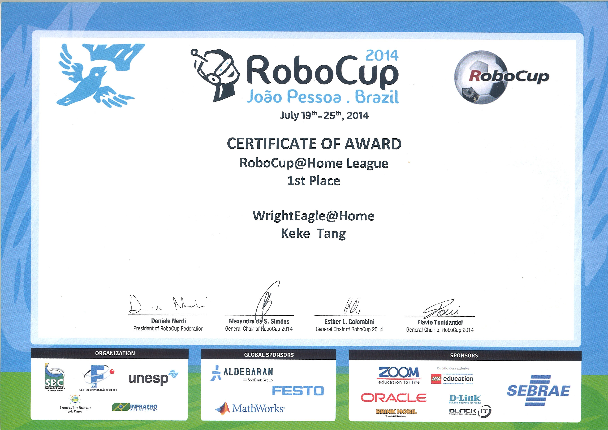
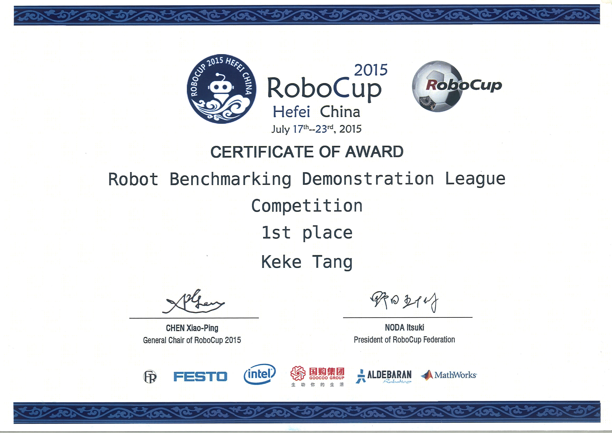
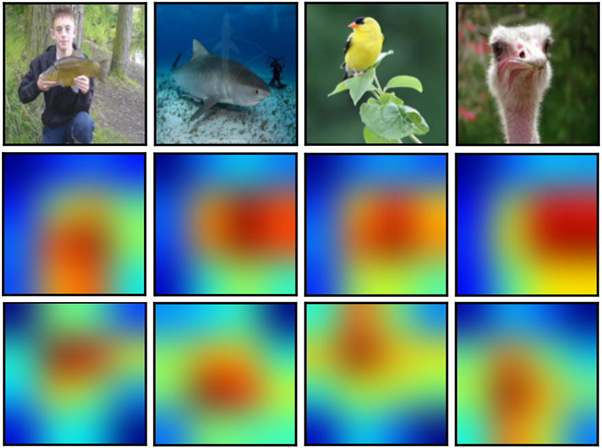
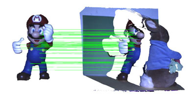

Dr. Keke TANG
Associate Professor
Cyberspace Institute of Advanced Technology
Guangzhou University
Email: tangbohutbh[at]gmail[dot]com
Office: Floor 10, Information Hub Building, Guangzhou, Guangdong Province, China
I am looking for students to join us to conduct high-quality research in Computer Vision and Computer Graphics (in particular, Deep Networks, Robotics, Computational Fabrication, and 3D Vision). Feel free to contact me.
News
09.05.2019 I will present the paper "Computational Design of Steady 3D Dissection Puzzles" in the Eurographics 2019.
Biography
Keke Tang is an associate professor at Guangzhou University since January 2019. From 2017.8 to 2018.12, he worked as a postdoctoral fellow in Prof. Wenping Wang's group (IEEE Fellow) of the University of Hong Kong.Keke Tang received his B.S. from Jilin University in 2012, and Ph.D. from University of Science and Technology of China supervised by Prof. Xiaoping Chen and Dr. Peng Song, in 2017.
Find more about Keke: Google Scholar
Research
His research interests fall into the areas of robotics, computer vision and computer graphics, including- Robotics
- Robotics Vision
- SLAM
- Computational Robotics
- Computer Vision
- 3D Shape Description and Matching
- 3D Object Registration, Reconstruction, and Recognition
- Image Classification
- Computer Graphics
- Geometry Processing
- Computational Fabrication
Awards
| RoboCup | RoboCup is the most famous robotics competition in the world aiming at promoting robotics and AI research. |
|

|
The 1st place of RoboCup@ Home League 2014 note: this is the only time that a Chinese team has ever won a championship. |
|

|
The 1st place of RoboCup@ Robot Benchmarking Demonstration League 2015 note: this is the only time that a Chinese team has ever won a championship. |
Referred Research Publications
| Pre-Prints | |
|

|
Attending Category Disentangled Global Context for Image Classification Keke Tang, Guodong Wei, Runnan Chen, Jie Zhu, Zhaoquan Gu, Wenping Wang arXiv, 2018 [Paper] |
Accepted Papers |

|
CODEs: Chamfer Out-of-Distribution Examples against Overconfidence Issue Keke Tang, Dingruibo Miao, Weilong Peng, Jianpeng Wu, Yawen Shi, Zhaoquan Gu, Zhihong Tian, and Wenping Wang IEEE International Conference on Computer Vision (ICCV), accepted, 2021 (CCF A类，计算机视觉三大顶会之一) |

|
A Hybrid Underwater Manipulator System With Intuitive Muscle-Level sEMG Mapping Control Hua Zhong, Zhong Shen, Yafei Zhao, Keke Tang, Zheng Wang, and Wenping Wang IEEE Robotics and Automation Letters, 2020 (selected for presentation at ICRA) |

|
Computational Design of Steady 3D Dissection Puzzles Keke Tang, Peng Song, Xiaofei Wang, Bailin Deng, Chi-Wing Fu, and Ligang Liu Computer Graphics Forum (Proc. of Eurographics), accepted, 2019 (CCF B类，计算机图形学三大顶会之一) [Paper] [Video: youtube, youku] |
|

|
3D Object Recognition in Cluttered Scenes With Robust Shape Description and Correspondence Selection Keke Tang, Peng Song, and Xiaoping Chen IEEE ACCESS, 2017 (selected as one of the Featured Articles) [Paper] [Project Page] |

|
Signature of Geometric Centroids for 3D Local Shape Description and Partial Shape Matching Keke Tang, Peng Song, and Xiaoping Chen The 13th Asian Conference on Computer Vision (ACCV), 2016 (CCF C类) [Paper] [Project Page] |